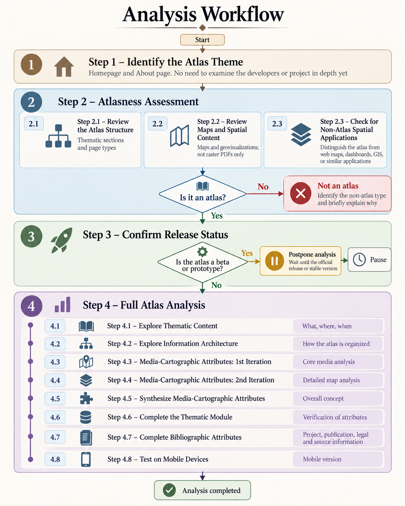
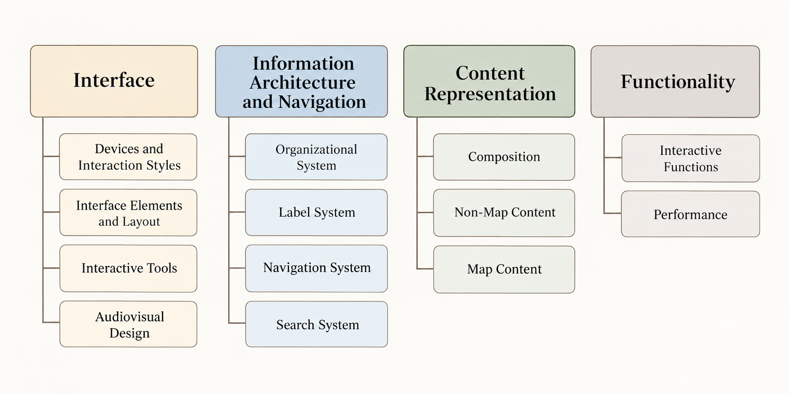
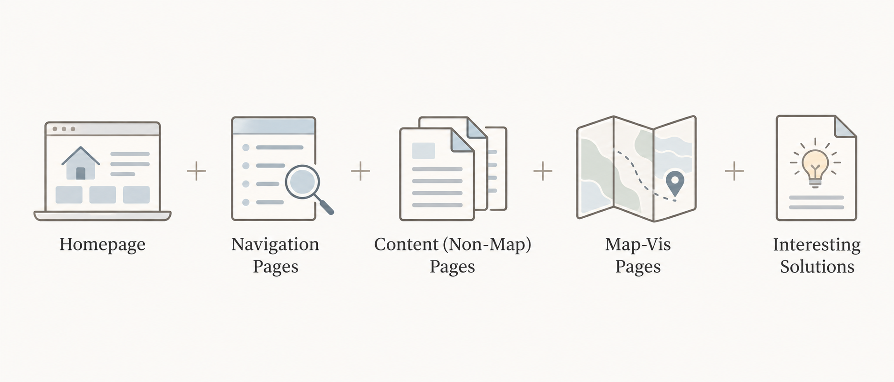
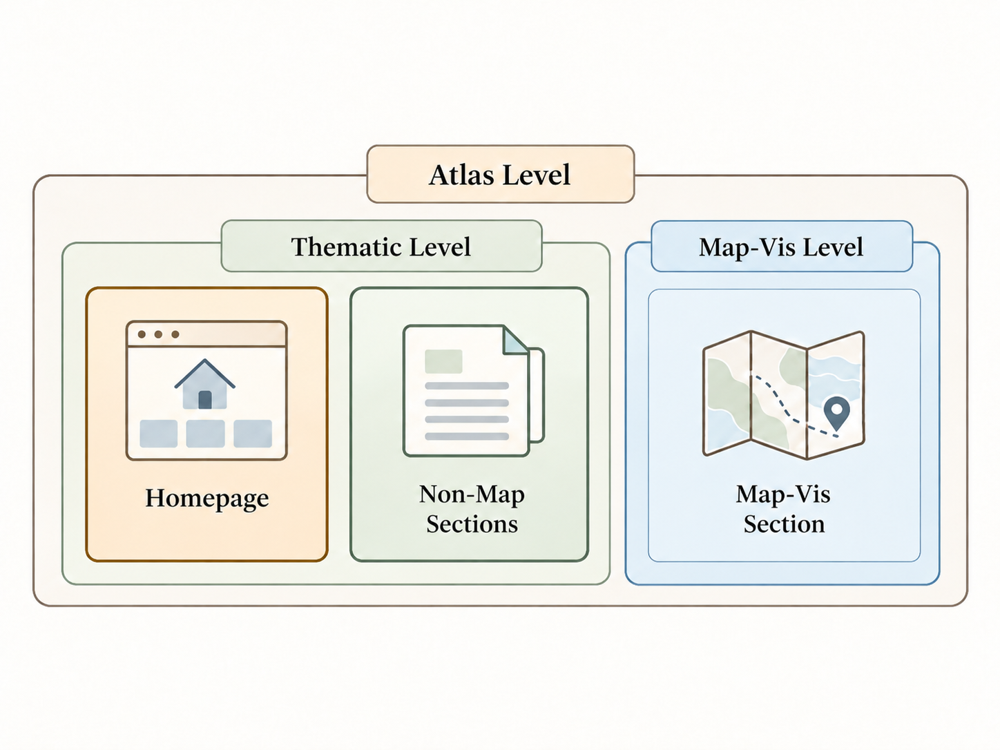

The order of attributes within the Atlas Explorer analysis modules is designed to guide users through an atlas’s characteristics sequentially, moving from the general to the specific. However, for analyzing new atlases from scratch, this sequence is not optimal in terms of analytical logic (analysis proceeds from the specific to the general), time efficiency (for example, the product may ultimately prove not to be an atlas), or the objectivity of the analysis.
This document presents a model for atlas analysis used by the developer of Atlas Explorer. Atlases are analyzed from a media-cartographic perspective; consequently, some thematic, critical, technical, and other aspects may currently receive less attention. The proposed model is not intended to be the only correct approach. Its goal, like that of the entire analysis, is to gain a better understanding of the structure of atlases and the design and editorial decisions made, and to find ways to make atlases more interesting, engaging, and meaningful. The analysis workflow is presented in Figure 1.

Figure 1.
Analysis Workflow
Step 1
Identify the Atlas Theme (What Is This Atlas About?)
First, we need to establish in general terms what the atlas is about: its main theme, topics and the territory (or space) it covers. Detailed information about the developers and the project is not necessary at this stage of the analysis. Information available on the homepage and the About page is usually sufficient.
Step 2
Atlasness Assessment (Determine Whether It Is an Atlas)
Before proceeding to a detailed analysis of the product, it is necessary to make sure that it is indeed an atlas. Here, detailed analysis refers to a full analysis using the express analysis model, which takes approximately 2–3 hours; the standard analysis model usually requires about 30–50 hours. To assess atlasness, examine the product’s structure (its information architecture) and its main content.
Step 2.1
Review the Atlas Structure
Review all thematic sections and subsections to identify the Method of Page Presentation, the types of screens (interfaces), and whether a Layout Template is used. At this stage, the implementation of such attributes as Distribution, Implementation Method, Access User Guidance, Inclusiveness, and the attributes related to the atlas language also becomes clear.
Step 2.2
Review Maps and Spatial Content
Review the atlas pages to verify the presence of maps and/or (geo)visualizations and make a preliminary assessment of Content Spatiality. If only raster maps are present, determine whether they were specifically created or adapted for the atlas. Also check whether the raster content is displayed within the atlas’s multimedia shell rather than opened as embedded PDF files.
Step 2.3
Check for Non-Atlas Spatial Applications
Check whether the product is another type of spatial application rather than an atlas. In some cases, this is immediately apparent and requires little discussion. For example, when the product consists solely of a collection of dashboards, an interactive map with multiple layers devoted to a single topic, or a specialized GIS/CIS interface with numerous tools and monitoring functions. In other cases, the atlasness of the product may become clear only through further analysis. In borderline cases, we recommend conducting a full analysis of the product as an atlas.
If the product passes the three checks described above, it can be considered an atlas.
If it does not, identify the type of non-atlas application and briefly explain why the product should not be considered an atlas. Classifying a product as a non-atlas does not automatically mean that it is unsuccessful or unworthy of attention. Interesting solutions can and should be sought across all types of spatial and thematic applications. It simply means that, at present, the product lacks certain spatial or other characteristics required for it to be considered an object of study in atlas cartography (atlas discipline). It is also worth considering whether the project has the potential to develop into an atlas and what changes could transform it into one.
Step 3
Confirm Release Status
Before continuing the analysis, make sure that the atlas is a fully released product rather than a prototype or beta version. If an official release or version 1.0 has not yet been published, the analysis should be postponed until the product reaches a stable release stage.

Figure 2.
Electronic Atlas Components from a Media Perspective
Step 4
Full Atlas Analysis
Proceed with the full express analysis of the atlas across the three groups of attributes.
We recommend leaving the Bibliographic Attributes module, as well as detailed information about the atlas project and its developers, until the end of the analysis. Prior knowledge about the atlas concept, purpose, or thematic content may influence how its elements are subsequently perceived. To conduct a more impartial analysis, one must gradually acquire knowledge and form, reconsider, and refine conclusions through direct interaction with the atlas.
Before starting the analysis, check whether the atlas requires user registration. If registration is available, create an account to ensure access to all available content and functionality.
Step 4.1
Explore Thematic Content
Begin by focusing on the thematic attributes—that is, on what information the atlas contains. Review all thematic pages and map titles, and record which topics, territories, and time periods are represented, as well as the order in which they appear and their relative prominence within the atlas. Pay attention to the dating of the content and the frequency of updates.
For now, postpone completing the Content Type, AI-generated Content, Data Catalog, and Story-centered Content attributes, as they are more closely related to content representation.
Step 4.2
Explore Information Architecture
Next, determine how the thematic information is organized within the atlas by moving directly to the Information Architecture and Navigation submodule. At this stage, complete all attributes up to the navigation-related ones, as navigation is better examined together with the interface.
Step 4.3
Media-Cartographic Attributes: First Iteration
Now focus on how the atlas is implemented as an application and how its thematic content is integrated into the application/website. Analyze the related groups of Interface, Navigation, Content Representation, and Functionality attributes in sequence. Postpone completing the General Attributes for now.
While reviewing the atlas pages, it is useful to take screenshots of typical implementations and noteworthy solutions. Afterwards, select the most representative and informative screenshots for archiving according to the scheme shown in Figure 3.
Postpone the analysis of the interface and atlas performance on mobile devices. Also leave aside the attributes related to the presence of a paper atlas.

Figure 3.
Screenshot Scheme for Archiving Atlas Pages
Begin by analyzing the media-cartographic attributes at the atlas level and the thematic section level, and only then proceed to the map/visualization section level (Figure 4). Accordingly, the first iteration excludes the following attributes: Layout Pattern (Map-Vis Level), Map Area Ratio (Map-Vis Level), Layout Flexibility, Main Navigation Mechanism (Map-Vis Level), Search on Map, as well as all attributes from Map Concept onward, including those related to functionality.

Figure 4.
Atlas Information Architecture Levels
Step 4.4
Media-Cartographic Attributes: Second Iteration
Now analyze the atlas’s cartographic representation and functionality, completing all related attributes. Proceed through the attributes in sequence, starting with the Interface group. This second iteration also serves to verify and refine the attribute values identified during the first iteration.
Step 4.5
Synthesize Media-Cartographic Attributes
Complete all general media-cartographic attributes and determine the atlas metaconcept.
Step 4.6
Complete the Thematic Module
After completing the media-cartographic analysis, return to the thematic analysis module and complete the previously postponed attributes: Content Type, AI-generated Content, Data Catalog, and Story-centred Content.
Step 4.7
Complete Bibliographic Attributes
Proceed to the Bibliographic Attributes module and complete the attributes in sequence. Search for all available information about the project, including legal information, on the atlas website, in publications related to the atlas, and in other accessible open sources.
Check whether a related paper atlas exists. Such an atlas should have identical or very similar thematic content and include at least several authors who were involved in the creation of the electronic atlas. If a related paper atlas exists and the electronic version is a reproduction of it, revise the Metaconcept and any other relevant media-cartographic attributes accordingly.
Step 4.8
Test on Mobile Devices
Complete the analysis by testing the atlas on mobile devices. Mobile testing is placed at the end of the analysis because the main desktop version and its full functionality should be examined first. This makes it clear which functions should then be tested in the mobile version. The Fully Functional attribute should be assessed based on the desktop version.